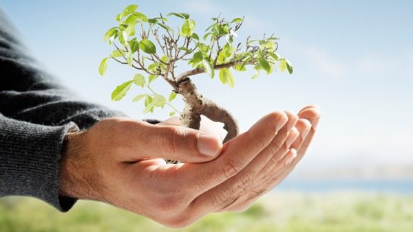
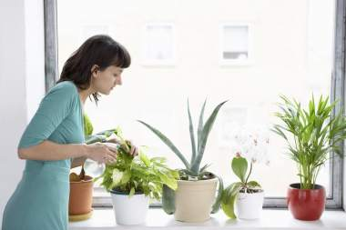
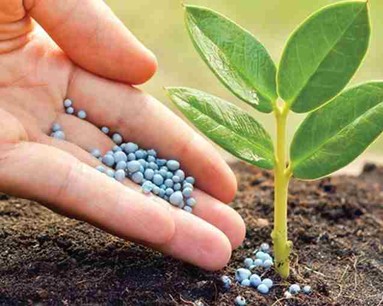

|
Lo sé, te hiciste con una planta de interior y ahora tiene sus hojas amarillas, languidecen y se caen. Parece como si no se encontrara cómoda con ninguna de tus atenciones; -¡tú, que tanto la mimas!-. No se lo tengas en cuenta; la vida de una planta dentro de casa casi nunca es fácil. Las condiciones en tu hogar serán siempre las más confortables para ti, pero no tienen por qué obedecer a las necesidades de tus plantas.Tanto para el cuidado de tus plantas de interior o de exterior, es necesario que entiendas, primero, ciertos conceptos básicos de jardinería y medio ambiente. No te asustes, no tienes que estudiar la diferencia entre herbáceas anuales y perennes.
|
|  |
|
Para abordar de forma definitiva muchas de las dudas surgidas en los comentarios, voy a enumerar las causas más frecuentes por las que las plantas de interior se quejan amargamente. Las plantas de interior, al tenerlas dentro de casa, necesitan un riego menos frecuente. Estamos acostumbrados a hidratar en abundancia las plantas del jardín o la terraza cuando llega el verano, para después reducir de forma notable la frecuencia al acercarse el invierno. Debe ser así, es lo correcto, por efecto de la intemperie. Pero las plantas de interior se encuentran más protegidas y no acusan tanto las estaciones. No quiero decir que no tengas que aumentar la dosis de agua en la época de más calor. Deberás hacerlo, es evidente, pero en menor medida de lo que se esperaría en una planta de exterior.
|
|  |
|
Los 3 elementos más importantes que necesitan las plantas para crecer adecuadamente son:
Condiciones de clima adecuadas para esa planta.
Un suelo nutritivo que permita la circulación del agua y el aire (que sea permeable).
Cantidad de luz conveniente para el tipo de planta que quieres cuidar.La ausencia de luz suficiente es una de las razones más habituales por las que una planta de interior te mostrará su “peor cara”. No todas aceptan esta situación de la misma manera; es justo decir que las hay con requerimientos más escasos (aspidistra, filodendro, bambú de la suerte, bromelias, helechos…). Pero como norma general las plantas de interior han de colocarse cerca de una ventana, balcón, vidriera o galería; con luminosidad suficiente para poder realizar su función más vital: la fotosíntesis.
Es decir, estar en un buen lugar, comer saludable, hidratarse (cuidar los poros también) y tomar el sol de vez en cuando. Igual que un ser humano.
|
|  |